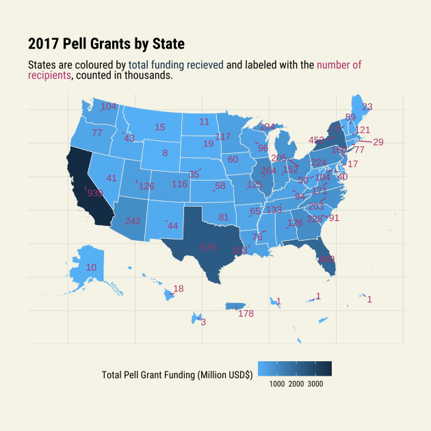

library(ggplot2)
library(tidyverse)
library(hrbrthemes)
library(showtext)
library(urbnmapr)
library(rsvg)
library(ggrepel)2022 Week 35: Pell Grants
Setup
font_add_google("Roboto Condensed")
showtext_auto()Load Data
tuesdata <- tidytuesdayR::tt_load('2022-08-30')
Downloading file 1 of 1: `pell.csv`pell <- tuesdata$pellClean Data
stateSF <- get_urbn_map(map = "territories_states", sf = TRUE)old-style crs object detected; please recreate object with a recent sf::st_crs()
old-style crs object detected; please recreate object with a recent sf::st_crs()
old-style crs object detected; please recreate object with a recent sf::st_crs()
old-style crs object detected; please recreate object with a recent sf::st_crs()pellSF <- pell |>
filter(YEAR == 2017) |>
group_by(STATE) |>
summarise(sumAward = sum(AWARD),
sumRecipient = sum(RECIPIENT)) |>
rename(state_abbv = STATE) |>
full_join(stateSF, by = "state_abbv") |>
filter(!is.na(state_name))Plot
pellPlot <- pellSF %>%
ggplot(aes(geometry = geometry)) +
geom_sf(aes(fill = round(sumAward/1000000)),
color = "#F3EFE0", size = 0.25) +
geom_text_repel(aes(label = round(sumRecipient/1000)),
color = "#AA336A",
stat = "sf_coordinates",
force_pull = 100,
nudge_x = 5000,
min.segment.length = 0,
seed = 1) +
theme_ipsum_rc() +
theme(panel.background = element_rect(fill = "#F5F3E5",
linetype = 0),
plot.background = element_rect(fill = "#F5F3E5",
linetype = 0),
legend.position = "bottom",
axis.title.x=element_blank(),
axis.text.x = element_blank(),
axis.ticks.x = element_blank(),
axis.title.y = element_blank(),
axis.text.y = element_blank(),
axis.ticks.y = element_blank(),
axis.line.x = element_blank()) +
scale_fill_continuous(high = "#132B43",
low = "#56B1F7",
name = "Total Pell Grant Funding (Million USD$)") +
labs(title = "2017 Pell Grants by State",
subtitle = "States are coloured by total funding recieved and labeled with the number of
recipients, counted in thousands.")
tmp <- tempfile()
ggsave(tmp, pellPlot, device = "svg", width = 7, height = 7)
rsvg_png(tmp, "Out/2022-08-30.png")
Session Info
sessionInfo()R version 4.2.1 (2022-06-23 ucrt)
Platform: x86_64-w64-mingw32/x64 (64-bit)
Running under: Windows 10 x64 (build 19043)
Matrix products: default
locale:
[1] LC_COLLATE=English_Australia.utf8 LC_CTYPE=English_Australia.utf8
[3] LC_MONETARY=English_Australia.utf8 LC_NUMERIC=C
[5] LC_TIME=English_Australia.utf8
attached base packages:
[1] stats graphics grDevices utils datasets methods base
other attached packages:
[1] ggrepel_0.9.1 rsvg_2.3.1 urbnmapr_0.0.0.9002
[4] showtext_0.9-5 showtextdb_3.0 sysfonts_0.8.8
[7] hrbrthemes_0.8.0 forcats_0.5.1 stringr_1.4.0
[10] dplyr_1.0.9 purrr_0.3.4 readr_2.1.2
[13] tidyr_1.2.0 tibble_3.1.7 tidyverse_1.3.1
[16] ggplot2_3.3.6
loaded via a namespace (and not attached):
[1] fs_1.5.2 sf_1.0-8 usethis_2.1.6 lubridate_1.8.0
[5] bit64_4.0.5 httr_1.4.3 tools_4.2.1 backports_1.4.1
[9] utf8_1.2.2 R6_2.5.1 KernSmooth_2.23-20 DBI_1.1.3
[13] colorspace_2.0-3 withr_2.5.0 tidyselect_1.1.2 bit_4.0.4
[17] curl_4.3.2 compiler_4.2.1 extrafontdb_1.0 textshaping_0.3.6
[21] cli_3.3.0 rvest_1.0.2 xml2_1.3.3 labeling_0.4.2
[25] scales_1.2.0 classInt_0.4-7 proxy_0.4-27 systemfonts_1.0.4
[29] digest_0.6.29 svglite_2.1.0 rmarkdown_2.14 tidytuesdayR_1.0.2
[33] pkgconfig_2.0.3 htmltools_0.5.2 extrafont_0.18 dbplyr_2.2.1
[37] fastmap_1.1.0 htmlwidgets_1.5.4 rlang_1.0.4 readxl_1.4.0
[41] rstudioapi_0.13 farver_2.1.0 generics_0.1.2 jsonlite_1.8.0
[45] vroom_1.5.7 magrittr_2.0.3 s2_1.1.0 Rcpp_1.0.8.3
[49] munsell_0.5.0 fansi_1.0.3 gdtools_0.2.4 lifecycle_1.0.1
[53] stringi_1.7.6 yaml_2.3.5 grid_4.2.1 parallel_4.2.1
[57] crayon_1.5.1 haven_2.5.0 hms_1.1.1 knitr_1.39
[61] pillar_1.7.0 wk_0.6.0 reprex_2.0.1 glue_1.6.2
[65] evaluate_0.15 modelr_0.1.8 vctrs_0.4.1 tzdb_0.3.0
[69] selectr_0.4-2 Rttf2pt1_1.3.10 cellranger_1.1.0 gtable_0.3.0
[73] assertthat_0.2.1 xfun_0.31 broom_1.0.0 e1071_1.7-11
[77] ragg_1.2.2 class_7.3-20 units_0.8-0 ellipsis_0.3.2